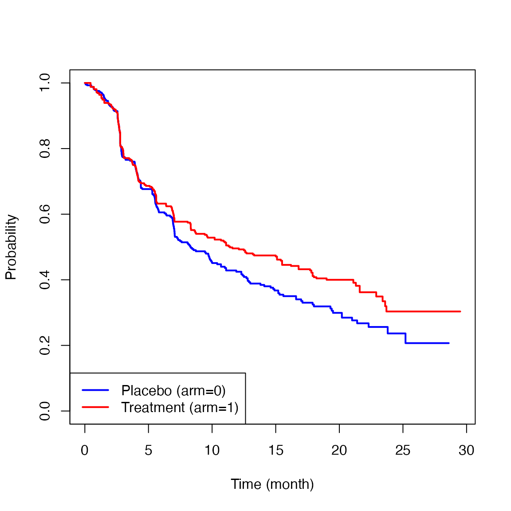

Vignette for the ltrmst2adapt function in the survRM2adapt package
Miki Horiguchi1, Hajime Uno2
March 23, 2023
vignette-survRM2adapt.Rmd1 Introduction
Cancer immunotherapy is an important treatment option for cancer patients, and clinical trials that evaluate immunotherapy will increasingly be conducted toward optimizing cancer management. Unlike cytotoxic agents, immunotherapies do not attack the cancer cell directly but utilize the immune system to do so. This unique approach leads to the possibility of delayed treatment effects, but when successful can deliver long-lasting benefits for treated patients.
A 2020 study\(^{1}\) showed that, in almost all cancer phase III randomized controlled trials, the log-rank test and Cox’s hazard ratio (HR) are used for testing the equality of the survival functions and estimating the magnitude of the treatment effect, respectively. However, the log-rank test may not be powerful enough to capture the delayed treatment effect we often see in immunotherapy studies. In addition, the basis of the traditional Cox’s HR method is the proportional hazards (PH) assumption which assumes that the hazard functions from two groups are constant over the study time. It has been shown that the PH assumption does not hold in most immunotherapy studies. Therefore, the conventional analysis methods using the log-rank test and HR estimation may be suboptimal, and development of alternative approaches are critical for the successful development of immunotherapy.
The long-term restricted mean survival time (LT-RMST) and the adaptive (or flexible) version of the LT-RMST have been proposed for possible application to immunotherapy studies.\(^{2-4}\) In this vignette, we briefly review these methods and illustrate how to implement them using the ltrmst2adapt function in the survRM2adapt package. The package was made and tested on R version 4.2.3.
2 Installation
Open the R or RStudio applications. Then, copy and paste either of the following scripts to the command line.
To install the package from the CRAN:
install.packages("survRM2adapt")To install the development version:
install.packages("devtools") #-- if the devtools package has not been installed
devtools::install_github("uno1lab/survRM2adapt")2 Sample Reconstructed Data
Throughout this vignette, we use sample data which we reconstructed from the CheckMate214 study reported by Motzer et al.\(^{5}\) The data consists of 847 patients with previously untreated clear-cell advanced renal-cell carcinoma; 425 for the nivolumab plus ipilimumab group (treatment) and 422 for the sunitinib group (control).
The sample reconstructed data from the CheckMate214 study is available on survRM2adapt package as cm214_pfs. To load the data, copy and paste the following scripts to the command line.
library(survRM2adapt)
nrow(cm214_pfs)
#> [1] 847
cm214_pfs[1:10,]
#> time status arm
#> 1 0.451 1 1
#> 2 0.451 1 1
#> 3 0.451 1 1
#> 4 0.451 1 1
#> 5 0.451 1 1
#> 6 0.710 1 1
#> 7 0.710 1 1
#> 8 0.710 1 1
#> 9 0.919 1 1
#> 10 0.919 1 1Here, time is months from the registration to progression-free survival (PFS), status is the indicator of the event (1: event, 0: censor), and arm is the treatment assignment indicator (1: Treatment group, 0: Control group).
Below are the Kaplan-Meier estimates for the PFS for each treatment group.

3 Long-Term Restricted Mean Survival Time (LT-RMST)
Let \(S\) be the survival function for the event time. The LT-RMST is defined as \[R(\eta, \tau) = \int_\eta^\tau S(s)ds,\] where \([\eta, \tau]\) is a fixed range within the study time \((0<\eta<\tau)\). \(R(\eta, \tau)\) can be estimated nonparametrically using the Kaplan-Meier estimator \(\hat{S}\). It can be interpretated as average survival time during the time range \([\eta, \tau]\) (i.e., the time treatment effect appears until the specific time \(\tau\)) and provide a clinically interpretable treatment effect associated with a long-lasting survival benefit for treated patients. Standardized by the width of the time window \([\eta, \tau]\), \[\frac{R(\eta, \tau)}{\tau-\eta}\] can be interpreted as an average survival probability on \([\eta, \tau]\) or average proportion of the time range spent alive.
For between-group comparison, we consider \[D(\eta, \tau) = R_{1}(\eta, \tau)-R_{0}(\eta, \tau)\] as a summary measure of the magnitude of the treatment effect. The asymptotic properties of \(\hat{D}(\eta, \tau)\) can be seen in Zhao et al.\(^{2}\)
4 Adaptive Long-Term Restricted Mean Survival Time (adaptive LT-RMST)
A challenge of the LT-RMST estimation would be specifying \(\eta\) for the approximate time point where the treatment effect will begin to appear. We have proposed the adaptive LT-RMST-based test/estimation methods to get around this limitation.\(^{4}\) This method is a modified version of the LT-RMST test/estimation methods with improved flexibility in choosing \(\eta\). Specifically, instead of choosing one specific value of \(\eta\), we specify a time range or a set of time values where \(\eta\) value can be included. For example, if we expect the treatment effect to appear sometime between 6 to 12 months, a time range \(B = \{b|b \in [6,12]\}\) (months) can be prespecified. The procedure selects one time value as \(\eta\) among \(B\) that can detect the treatment effect with the most statistical significance, which is not always the time point of separation of the two survival curves.
For testing the null hypothesis using the adaptive LT-RMST (i.e., \(H_{0}: D(\eta, \tau)=0\) for all \(\eta \in B\)), the following test statistic is used:
\[\sup_{b \in B} \left| D(b,\tau) / \sqrt{V(W_n(b,\tau))/n}\right|.\] The procedure derives the reference distribution of the test statistic using a zero-mean Gaussian process with the covariance function of the process \(W_n(\eta,\tau) \in B\) to obtain a p-value and a corresponding \((1-\alpha)\) simultaneous confidence bands for \(D(b,\tau)\). The detailed procedure is given in the full paper.\(^{4}\)
During the procedure, the largest value of \(\eta\), say, \(\eta^{*}\), that satisfies \[\left|\hat{D}(\eta^{*}, \tau)/\sqrt{\hat{V}(W_n(\eta^{*},\tau))/n}\right|=\sup_{b \in B}\left|\hat{D}(b, \tau)/\sqrt{\hat{V}(W_n(b,\tau))/n}\right|\] is chosen. A \((1-\alpha)\) confidence interval (CI) for \(D(\eta^{*},\tau)\) is then given by \[\hat{D}(\eta^{*}, \tau) \pm c_{\alpha}\sqrt{\hat{V}(W_n(\eta^{*},\tau))/n},\] where \(c_{\alpha}\) is derived using the reference distribution.
5 Implementation of Long-Term RMST Test/Estimation Methods
The procedure below shows how to use the function, ltrmst2adapt, to implement the LT-RMST method with a pre-specified \(\eta\).
ltrmst2adapt(indata=cm214_pfs, tau1=3, tau2=10, seed=123)
#>
#> RMST over the time window [3,10]
#>
#> RMST(arm1) RMST(arm0)
#> 4.415 4.191
#>
#> RMST(arm1-arm0) lower 0.95 upper 0.95 p_value
#> 0.224 -0.209 0.657 0.312The first argument (indata) is the data frame you want to analyze. The 1st column is the time-to-event variable, the 2nd column is the event indicator (1=event, 0=censor), and the 3rd column is the treatment indicator (1=treatment, 0=control). No missing values are allowed in this data matrix. The second argument (tau1) is an integer value indicating the lower end of the time window (\(\eta\)). The third argument (tau2) is an integer value indicating the upper end of the time window (\(\tau\)). The fourth argument (seed) is an integer value for random number generation in the resampling procedures.
When a fixed value is specified as tau1, the ltrmst2adapt function returns RMST over the time window [\(\tau_{1}\), \(\tau_{2}\)] on each group and the results of the between-group contrast measure (difference in the LT-RMST between the two groups). The estimated LT-RMSTs were 4.415 months and 4.191 months for the treatment group and the control group, respectively. The difference between the LT-RMSTs was 0.224 months (95% CI: -0.209 to 0.657, p-value=0.312).
6 Implementation of adaptive Long-Term RMST Test/Estimation Methods
Instead of specifying a fixed value of \(\eta\), the procedure below allows us to specify a set of values for \(\eta\), say, 0, 1, 2, and 3.
ltrmst2adapt(indata=cm214_pfs, tau1=c(0,1,2,3), tau2=10, seed=123)
#>
#> RMST over the time window [3,10]
#>
#> RMST(arm1) RMST(arm0)
#> 4.415 4.191
#>
#> RMST(arm1-arm0) lower 0.95 upper 0.95 p_value
#> 0.224 -0.218 0.666 0.332Here, the second argument (tau1) is a vector indicating the set of values for the lower end of the time window (\(\eta\)). The first, third, and fourth arguments are the same as specified in Section 5.
The ltrmst2adapt function returns RMST over the time window [\(\tau_{1}^{*}\), \(\tau_{2}\)] on each group and the results of the between-group contrast measure (difference in the LT-RMSTs), where \(\tau_{1}^{*}\) is the adaptively selected value among the specified values as tau1. With this example, 3 was selected as \(\tau_{1}^{*}\) among the candidates (0, 1, 2, and 3). The estimated LT-RMSTs for both groups and the difference between them were the same as the ones in the LT-RMSTs with fixed \(\eta\) in Section 5. The 95% CI for the difference was slightly wider (-0.218 to 0.666) than the LT-RMST with fixed \(\eta\), and the p-value was also slightly larger (0.332). These results suggest that the efficiency loss by adopting the flexibility in the adaptive LT-RMST method is not remarkable, compared to the LT-RMST with fixed \(\eta\).
7 Conclusions
The function, ltrmst2adapt(), in the survRM2adapt package can easily implement the LT-RMST-based statistical comparison with a pre-specified \(\eta\) and also with a data-dependent choice of \(\eta\), which we have called the adaptive LT-RMST approach in this vignette.
The adaptive LT-RMST approach does not require users to pre-specify a single number for \(\eta\) but rather a set of candidates for \(\eta\), making the adaptive LT-RMST approach more flexible than the LT-RMST approach with a fixed \(\eta\).
Both approaches provide estimates of the magnitude of the treatment effect that do not depend on the study-specific censoring distribution. They also offer greater power than the traditional Cox regression approach to detect the treatment effect when the delayed survival benefit is expected, and thus will be particularly useful for clinical trials evaluating the efficacy and safety of cancer immunotherapies.
References
Uno H, Horiguchi M, Hassett MJ (2020). Statistical test/estimation methods used in contemporary phase III cancer randomized controlled trials with time-to-event outcomes. Oncologist, 25(2):91-93. https://doi.org/10.1634/theoncologist.2019-0464
Zhao L, Tian L, Uno H, et al (2012). Utilizing the integrated difference of two survival functions to quantify the treatment contrast for designing, monitoring, and analyzing a comparative clinical study. Clinical Trials, 9(5):570-7. https://doi.org/10.1177/1740774512455464
Horiguchi M, Tian L, Uno H et al (2018). Quantification of long-term survival benefit in a comparative oncology clinical study. JAMA Oncology, 4(6):881-882. https://doi.org/10.1001/jamaoncol.2018.0518
Horiguchi M, Tian L, Uno H. On assessing survival benefit of immunotherapy using long-term restricted mean survival time. Statistics in Medicine, 42(8):1139-1155. https://doi.org/10.1002/sim.9662
Motzer RJ, Tannir NM, McDermott DF, et al. (2018). Nivolumab plus ipilimumab versus sunitinib in advanced renal-cell carcinoma. New England Journal of Medicine, 378(14):1277-1290. https://doi.org/10.1056/NEJMoa1712126
Notes
See also the vignette for the survRM2 package for details on the implementation of the RMST-based test/estimation approaches. https://CRAN.R-project.org/package=survRM2